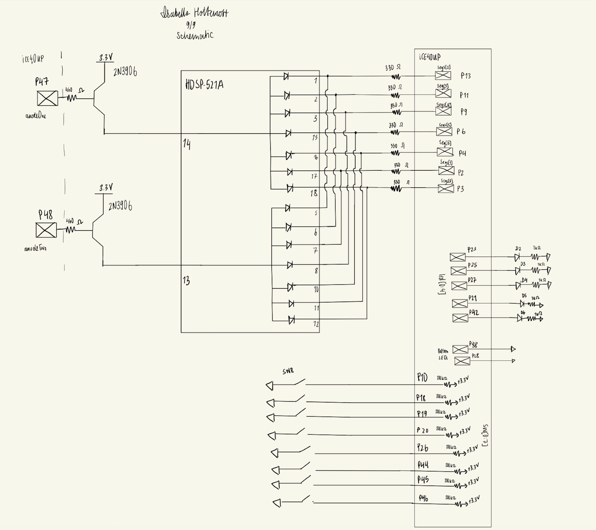

Lab 2: Multiplexed 7-Segment Display
Introduction
In this lab, a design was implemented on the UPduino v3.1 FPGA that time-multiplexed between two seven-segment displays. The design utilized only one set of GPIO pins, and only one seven segment HDL module. The time multiplexing occured at a fast enough rate that switching between segments was not discernable to the human eye.
Design and Testing Methodology
The iCE40 UltraPlus HSOSC primitive was used to generate a clock signal, which was stepped down to a 60 Hz signal that the design was based on. At this frequency, the human eye can no longer percieve refresh rates. This frequency also ensured that bleeding did not occur between the two segments.
An 8-pin dip switch controls the HDSP-521A Dual Seven Segment Display, where the first four switches correspond to the first segment, and final four correspond to the second. When the internal clock is low, the input from the first four switches is selected, and when the clock is high, the input from the final four are selected.
At the same time, when the clock is low, a signal is sent to drive the common anode of the first segment. When the clock is high, a separate signal drives the common anode of the second segment.
The sum of the two hex values on the HDSP-521A Display is represented in binary on the on-board LEDs of the E155 Development Board. These diodes are in series with 1 kΩ resistors to limit current.
The Seven Segment Display module- a priority encoder- was used to convert the desired switch inputs into an output hex digit. The HDSP521A required a larger current draw than the FPGA can output, which was addressed by two 2N3906 PNP transistors. 330 Ω resistors were placed at the cathodes of the diodes to ensure a 10mA current pull through the segment, over the (3.3 V - 0.25 Vce) = 3.05 V drop, when ON. Calculations for the current limiting resistors between the cathodes and GPIO pins can be found below.

A 460 Ω resistor was placed between the transisotr base and the GPIO pin to limit the current draw to under 5 mA through the base, as specified by the datasheet. Calculations for this component value can be found below.
To control the input to the Seven Segment Display, a priority encoder was used. The output signals were mapped to their respective pins on the input of the HDSP-511A Seven Segment Display.
Technical Documentation
The source code for Lab 2 can be found in the following GitHub repository.
Block Diagram
The block diagram above illustrates the lab2_ih design. The top level module is called lab2_ih and takes in inputs: reset, sw1, and sw2. Lab2_ih outputs to five leds (led), a single set of GPIO pins for the dual seven segment (segs), to both transistors to illuminate the proper segment anode (anodeOne, anodeTwo), and to the two remaining on-board LEDs to keep them from floating (bottomLEDs). Lab2_ih includes five submodules: the high-speed oscillator block (hf_osc), the clock divider to 60 Hz (clock_div), the adder (adder), the seven segments priority encoder (segments), and the anode-selecting module (anodeselect).
Schematic
The schematic above illustrates the physical layout on the breadboard. Corresponding diode cathodes from the two seven segment displays were the same node (segment 1 A is the same node as segment 2 A, etc). These were connected in series with a 330 Ω current-limiting resistor to the GPIO pins. The on-board LEDs required 1 kΩ resistors to their limit current. The emitter of the transistor is powered by 3.3 V, while the collector goes straight to the segment anodes. The base of the PNP transistor is in series with a 460Ω resistor such that less than 5mA of current is drawn from the GPIO pin, which lies within specs.

Results and Discussion
This design met the intended objectives. All switches correctly spoke with the board, the proper LED-sum combinations were calculated and illuminated, and the Seven Segment Display shows two distinct hex values without any discernable flickering or bleeding.
Testbench Simulation
A testbench simulation was produced for every module in the design.
tb_lab2_ih:
The testbench for lab2_ih can be found here. The high speed clock was commented out to run this simulation, and 10 known cases were tested against the design. No errors occured.

tb_segments:
The testbench for the segments module can be found here. All possible combinations of input switch values were explicitly tested. No errors occured.
tb_clock_div:
The testbench for the clock divider module can be found here. A test oscillator was produced that ticked every 800000 time stamps, where two time stamps represent a full clock cycle. The test oscillator was compared to that produced by the clock_div module when fed in the testbench clock signal. Both oscillators can be seen to rise and fall simulataneously. The HSOSC produces a 48 MHz clock. The clock divider module has been shown to divide the input clock signal by 800000. 48 MHz/800000 = 60 Hz, which is the targeted frequency switching between displays. No errors occured.
tb_anodeselect:
The testbench for the anodeselect module can be found here. The test verifies that the correct switch value is sent to the segment modules, as well as the corresponding correct anode, across 12 handwritten vectors. The test verifies that the two anodes are never HIGH at the same timestamp. No errors occured.
tb_adder:
The testbench for the adder module can be found here. A system verilog function iterates through all possible input-addition combinations to verify all possible additions. No errors occured.

Conclusion
This design design illuminated a Dual Seven Segment Display using a single segment module through the use of time-multiplexing. A transistor circuit and selected resistors were used to ensure that sufficient, but not excessive current, flows through components based on datasheet values. I spent a total of 18 hours on this lab.
AI Prototype Summary
The prompt that I provided the LLM was: “Write SystemVerilog HDL to time multiplex a single seven segment decoder (that decodes from four bits to a common anode seven segment display) to decode two sets of input bits and drive two sets of seven output bits.” In return, I recieved the following design that did not synthesize:
// Time Multiplexed Seven Segment Display Controller
// This module uses a single seven segment decoder to drive two displays
module seven_seg_mux (
input logic clk,
input logic reset_n,
input logic [3:0] digit0_in, // First 4-bit input
input logic [3:0] digit1_in, // Second 4-bit input
output logic [6:0] seg0_out, // Seven segment outputs for display 0
output logic [6:0] seg1_out, // Seven segment outputs for display 1
output logic digit0_enable, // Enable signal for display 0
output logic digit1_enable // Enable signal for display 1
);
// Internal signals
logic [3:0] mux_input;
logic [6:0] decoder_output;
logic mux_select;
logic slow_clk;
// Instantiate oscillator for timing
oscillator u_osc (
.clk(clk),
.reset_n(reset_n),
.slow_clk(slow_clk)
);
// Generate multiplexer select signal
always_ff @(posedge slow_clk or negedge reset_n) begin
if (!reset_n)
mux_select <= 1'b0;
else
mux_select <= ~mux_select;
end
// Input multiplexer
always_comb begin
case (mux_select)
1'b0: mux_input = digit0_in;
1'b1: mux_input = digit1_in;
endcase
end
// Instantiate seven segment decoder
seven_seg_decoder u_decoder (
.bin_in(mux_input),
.seg_out(decoder_output)
);
// Output demultiplexer and enable generation
always_comb begin
case (mux_select)
1'b0: begin
seg0_out = decoder_output;
seg1_out = 7'b1111111; // All segments off (common anode)
digit0_enable = 1'b0; // Active low enable
digit1_enable = 1'b1; // Disabled
end
1'b1: begin
seg0_out = 7'b1111111; // All segments off
seg1_out = decoder_output;
digit0_enable = 1'b1; // Disabled
digit1_enable = 1'b0; // Active low enable
end
endcase
end
endmodule
// Seven Segment Decoder Module
// Converts 4-bit binary input to seven segment display pattern
// Common anode configuration (active low outputs)
module seven_seg_decoder (
input logic [3:0] bin_in,
output logic [6:0] seg_out
);
// Segment mapping: seg_out = {g, f, e, d, c, b, a}
// Common anode: 0 = segment on, 1 = segment off
always_comb begin
case (bin_in)
4'h0: seg_out = 7'b1000000; // 0
4'h1: seg_out = 7'b1111001; // 1
4'h2: seg_out = 7'b0100100; // 2
4'h3: seg_out = 7'b0110000; // 3
4'h4: seg_out = 7'b0011001; // 4
4'h5: seg_out = 7'b0010010; // 5
4'h6: seg_out = 7'b0000010; // 6
4'h7: seg_out = 7'b1111000; // 7
4'h8: seg_out = 7'b0000000; // 8
4'h9: seg_out = 7'b0010000; // 9
4'hA: seg_out = 7'b0001000; // A
4'hB: seg_out = 7'b0000011; // b
4'hC: seg_out = 7'b1000110; // C
4'hD: seg_out = 7'b0100001; // d
4'hE: seg_out = 7'b0000110; // E
4'hF: seg_out = 7'b0001110; // F
endcase
end
endmodule
// Simple Oscillator Module
// Generates a slower clock for multiplexing
module oscillator (
input logic clk,
input logic reset_n,
output logic slow_clk
);
parameter DIVIDE_BY = 100000; // Adjust for desired refresh rate
logic [$clog2(DIVIDE_BY)-1:0] counter;
always_ff @(posedge clk or negedge reset_n) begin
if (!reset_n) begin
counter <= '0;
slow_clk <= 1'b0;
end else begin
if (counter == DIVIDE_BY - 1) begin
counter <= '0;
slow_clk <= ~slow_clk;
end else begin
counter <= counter + 1;
end
end
end
endmodule
// Testbench for verification
module seven_seg_mux_tb;
logic clk;
logic reset_n;
logic [3:0] digit0_in;
logic [3:0] digit1_in;
logic [6:0] seg0_out;
logic [6:0] seg1_out;
logic digit0_enable;
logic digit1_enable;
// Instantiate DUT
seven_seg_mux dut (
.clk(clk),
.reset_n(reset_n),
.digit0_in(digit0_in),
.digit1_in(digit1_in),
.seg0_out(seg0_out),
.seg1_out(seg1_out),
.digit0_enable(digit0_enable),
.digit1_enable(digit1_enable)
);
// Clock generation
initial begin
clk = 0;
forever #5 clk = ~clk;
end
// Test stimulus
initial begin
reset_n = 0;
digit0_in = 4'h0;
digit1_in = 4'h0;
#100 reset_n = 1;
// Test different digit combinations
#1000 digit0_in = 4'h3; digit1_in = 4'h7;
#2000 digit0_in = 4'hA; digit1_in = 4'hF;
#2000 digit0_in = 4'h5; digit1_in = 4'h2;
#5000 $finish;
end
// Monitor outputs
initial begin
$monitor("Time=%0t, digit0_in=%h, digit1_in=%h, seg0=%b, seg1=%b, en0=%b, en1=%b",
$time, digit0_in, digit1_in, seg0_out, seg1_out, digit0_enable, digit1_enable);
end
endmoduleNext, I asked the LLM to: “Write SystemVerilog HDL to time multiplex a single seven segment decoder (that decodes from four bits to a common anode seven segment display) to decode two sets of input bits and drive two sets of seven output bits. Use the seven segment decoder and oscillator provided in the attached files.” and attached my Lab 1 files. I received the following design that, again, did not synthesize.
// Isabella Hottenrott's segments module
// segments.sv
// Module containing Verilog code for Seven-segment display mapping
module segments(input logic [3:0] digit,
output logic [6:0] segs);
always_comb
case(digit)
0: segs = 7'b000_0001; //0
1: segs = 7'b100_1111; //1
2: segs = 7'b001_0010; //2
3: segs = 7'b000_0110; //3
4: segs = 7'b100_1100; //4
5: segs = 7'b010_0100; //5
6: segs = 7'b010_0000; //6
7: segs = 7'b000_1111; //7
8: segs = 7'b000_0000; //8
9: segs = 7'b000_1100; // 9
10: segs = 7'b000_1000; //a
11: segs = 7'b110_0000; //b
12: segs = 7'b011_0001; //c
13: segs = 7'b100_0010; //d
14: segs = 7'b011_0000; //e
15: segs = 7'b011_1000; //f
default: segs = 7'b111_1111;
endcase
endmodule
// Simple oscillator module for timing control
module oscillator(input logic clk,
input logic reset,
output logic slow_clk);
parameter DIVIDE_RATIO = 50000; // Adjust for desired refresh rate
logic [$clog2(DIVIDE_RATIO)-1:0] counter;
always_ff @(posedge clk or posedge reset) begin
if (reset) begin
counter <= 0;
slow_clk <= 0;
end else begin
if (counter == DIVIDE_RATIO - 1) begin
counter <= 0;
slow_clk <= ~slow_clk;
end else begin
counter <= counter + 1;
end
end
end
endmodule
module seven_seg_time_mux(
input logic clk,
input logic reset,
input logic [3:0] digit0, // First 4-bit input
input logic [3:0] digit1, // Second 4-bit input
output logic [6:0] segs0, // Seven segment outputs for display 0
output logic [6:0] segs1 // Seven segment outputs for display 1
);
// Internal signals
logic [3:0] mux_digit; // Multiplexed input to decoder
logic [6:0] decoder_segs; // Output from segments decoder
logic mux_select; // Select signal for multiplexing
logic slow_clk; // Slower clock for multiplexing
// Instantiate oscillator for timing control
oscillator timing_gen (
.clk(clk),
.reset(reset),
.slow_clk(slow_clk)
);
// Generate multiplexer select signal (toggles between displays)
always_ff @(posedge slow_clk or posedge reset) begin
if (reset)
mux_select <= 1'b0;
else
mux_select <= ~mux_select;
end
// Input multiplexer - select which digit to decode
always_comb begin
case (mux_select)
1'b0: mux_digit = digit0;
1'b1: mux_digit = digit1;
default: mux_digit = digit0;
endcase
end
// Instantiate Isabella's segments decoder
segments decoder (
.digit(mux_digit),
.segs(decoder_segs)
);
// Output demultiplexer - route decoder output to appropriate display
// When a display is not selected, turn off all segments (common anode = all high)
always_comb begin
case (mux_select)
1'b0: begin
segs0 = decoder_segs; // Display digit0
segs1 = 7'b111_1111; // Turn off display 1
end
1'b1: begin
segs0 = 7'b111_1111; // Turn off display 0
segs1 = decoder_segs; // Display digit1
end
default: begin
segs0 = 7'b111_1111;
segs1 = 7'b111_1111;
end
endcase
endendmodule
logic clk;
logic reset;
logic [3:0] digit0;
logic [3:0] digit1;
logic [6:0] segs0;
logic [6:0] segs1;
// Instantiate the Device Under Test (DUT)
seven_seg_time_mux dut (
.clk(clk),
.reset(reset),
.digit0(digit0),
.digit1(digit1),
.segs0(segs0),
.segs1(segs1)
);
// Clock generation (50MHz system clock)
initial begin
clk = 0;
forever #10 clk = ~clk; // 20ns period = 50MHz
end
// Test stimulus
initial begin
// Initialize signals
reset = 1;
digit0 = 4'h0;
digit1 = 4'h0;
// Release reset
#100 reset = 0;
// Test case 1: Display 3 and 7
#1000 digit0 = 4'h3; digit1 = 4'h7;
// Test case 2: Display A and F (hex)
#5000 digit0 = 4'hA; digit1 = 4'hF;
// Test case 3: Display 5 and 2
#5000 digit0 = 4'h5; digit1 = 4'h2;
// Test case 4: Display 8 and 1
#5000 digit0 = 4'h8; digit1 = 4'h1;
// Finish simulation
#10000 $finish;
end
// Monitor key signals
initial begin
$monitor("Time=%0t, digit0=%h, digit1=%h, segs0=%b, segs1=%b",
$time, digit0, digit1, segs0, segs1);
end
// Generate VCD file for waveform viewing
initial begin
$dumpfile("seven_seg_mux.vcd");
$dumpvars(0, seven_seg_time_mux_tb);
endendmodule
Both designs ran into the issue that the “loop count limit [of the clock] exceeded forever never breaks”. This occured because both LLM outputs created associated testbenches. I tried to take out this forever statement, and make the clock tick similarly to my own testbenches. However, when I did this, I received a “Synthesize Design Completed, Lattice Synthesis Engine Failed” error.